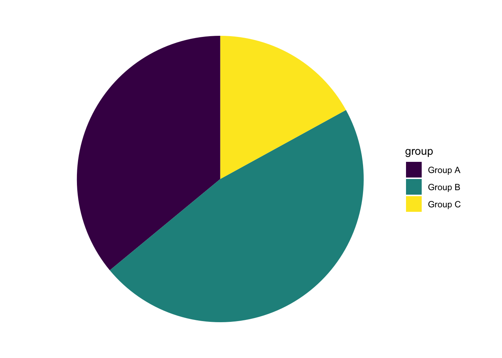
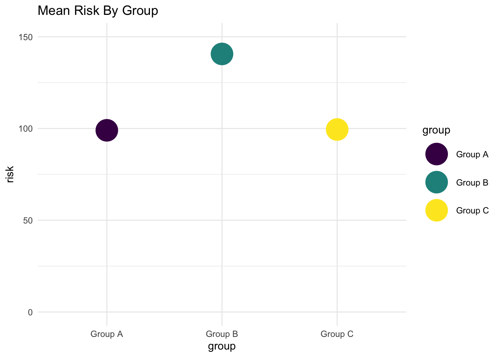
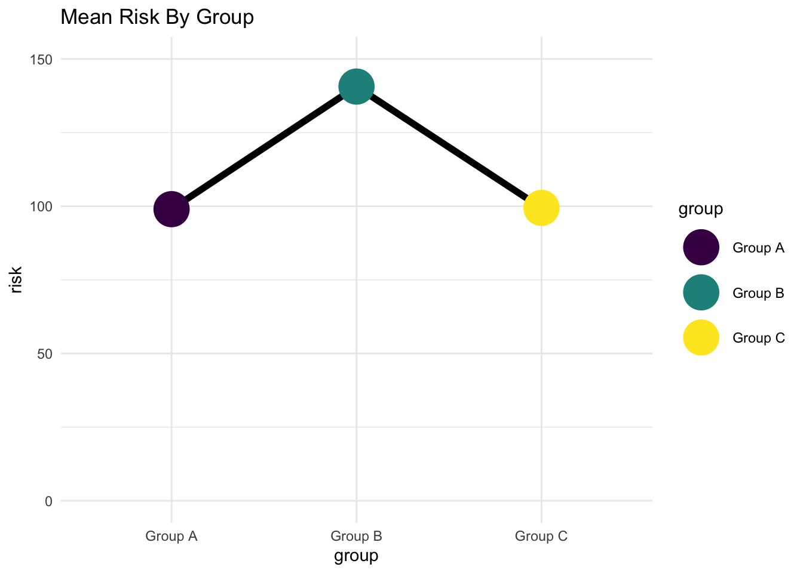
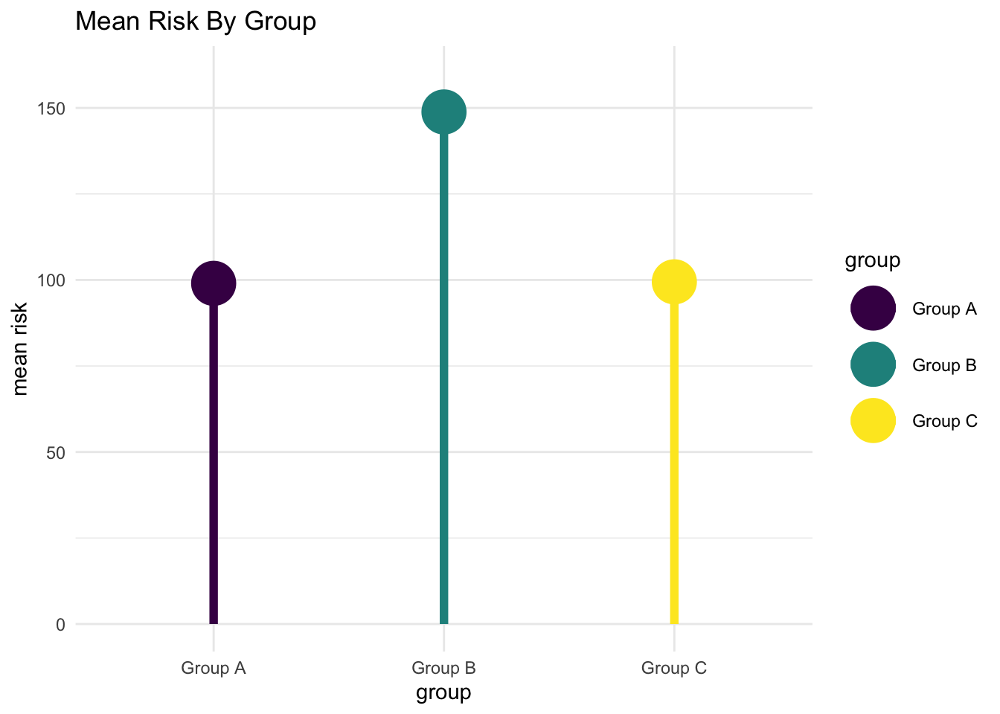
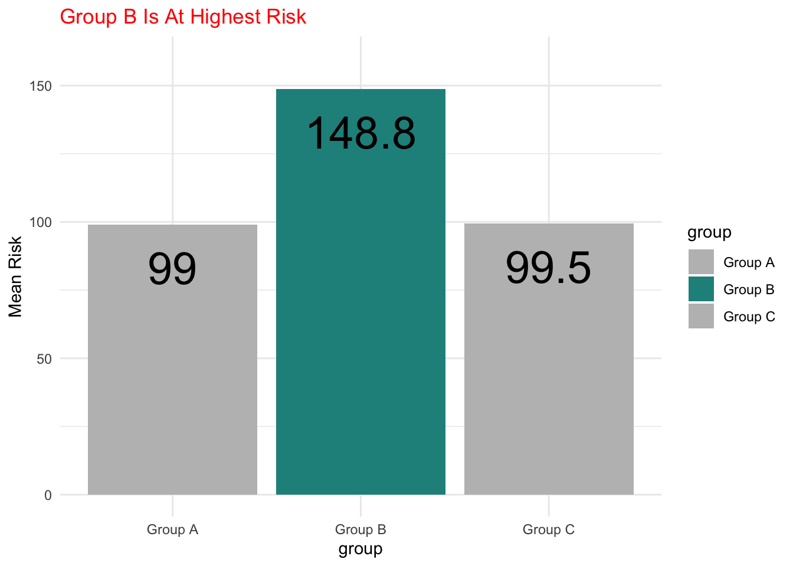

| Group A | Group B | Group C |
|---|---|---|
| 36 | 47 | 17 |
Background
In this post, I am trying to think through some best practices in showing disparities in a continuous risk factor or continuous outcome, like levels of depression or levels of poverty.
I am using the graphing library
ggplot. As I often do, I am going to show the code. The code can be useful, especially if you are trying to replicate some of these graphs.
However, the discussion is intended to be more conceptual, and you do not need to understand the code to follow the discussion. Indeed, the discussion is intended to be applicable to a wide variety of data visualization tools, including those that do not rely on coding.
I’m going to start by imagining that we have different groups of people.

We’re going to set up our graphing commands, which requires using some code.
Show the code
library(ggplot2) # beautiful graphs
library(ggbeeswarm) # "beeswarm" geometryGrammar of Graphics
Let’s think a little bit about a grammar of graphics: What are we going to graph, and how might we wish to represent those quantities on the graph?
In this example, we are graphing group and risk. In this example, I am going to use the x axis for the groups, and the y axis for risk.
And then I’m going to think about how I draw the information, which ggplot the graphing library that I am using, calls geometries. To start with, I’m going to use perhaps the most intuitive, or at least the most common, geometry of bars.
Here, right away, we are presented with two competing philosophies of the grammar of graphics. A minimalist philosophy, represented on the left hand side, would say that we shouldn’t add extra detail to the graph unless it adds extra information.
So, this philosophy would say that, as we outlined above, group goes on the x axis and risk goes on the y axis. We wouldn’t add extra detail, like color to the graph because we’ve already encoded both group and risk.
An alternative philosophy, represented on the right hand side, might say that for visual interest we can add extra detail, like color even if it doesn’t necessarily add extra information to the graph.
In this document, I’m going err on the side of making my graphs more visually interesting, and hopefully more informative, although I certainly understand the minimalist philosophy.
A Grammatical Statement
In the graphs below, group will go on the x axis. Risk will go on the y axis. In drawing this information in various ways–employing various geometries–I am going use colors (the Viridis color palette) for fill and color.
These decisions are echoed in the (admittedly complicated) ggplot code below which sets up the graphs to follow. Again, however, it’s not necessary to follow the code to follow the discussion.
Show the code
myplot <- ggplot(data = mydata, # the data I am using
aes(x = group, # x is the group
fill = group, # fill is the group
color = group, # color is the group
y = risk)) + # y is risk
labs(title = "Risk by Group") + # labels
scale_fill_viridis_d() + # fill color scale
scale_color_viridis_d() + # (outline) color scale
theme_minimal() # minimal themeExamples
Now that I’ve thought through the grammar of graphics, I can try different geometries, and think about how well they tell the story that I want to tell.
While
ggplotcode is provided, you can ignore the code if you like.
Bar Graph of Mean Values
As noted above, a bar graph might be the most intuitive, or at least the most common approach. Note that because the bars are the mean of risk scores for different groups, that we have to make this clear in the code.
Show the code
myplot +
stat_summary(fun.y = mean, geom = "bar") +
labs(title = "Mean Risk By Group")Points at Mean Values
Vertical
Instead of bars indicating mean risk, we could use points at the mean risk value for each group.
Show the code
myplot +
stat_summary(fun.y = mean, geom = "point", size = 10) +
ylim(0,150) +
labs(title = "Mean Risk By Group")
Horizontal
Show the code
myplot +
stat_summary(fun.y = mean, geom = "point", size = 10) +
ylim(0,150) +
coord_flip() +
labs(title = "Mean Risk By Group")Points at Mean Values Connected by Line
Perhaps we connect the points with a line. Connecting the points with a line in this way may be confusing, as it may imply some kind of trend that we do not wish to imply.
Show the code
myplot +
stat_summary(fun.y = mean, geom = "line",
group = 1,
color = "black", size = 2) +
stat_summary(fun.y = mean, geom = "point", size = 10) +
ylim(0,150) +
labs(title = "Mean Risk By Group")
“Lollipop” Chart
Vertical
Show the code
# In order to draw the segments of the lollipops,
# we have to summarize the data with dplyr,
# and 'pipe' into ggplot
library(dplyr) # data wrangling
mylollipop <- mydata %>%
group_by(group) %>% # group by group
summarise(mean_risk = mean(risk)) %>% # summarize by group
ggplot(aes(x = group,
y = mean_risk,
color = group)) +
geom_point(size = 10) +
geom_segment(aes(x = group,
xend = group,
y = 0,
yend = mean_risk),
size = 2) +
ylim(0,160) +
labs(title = "Mean Risk By Group",
y = "mean risk") +
scale_fill_viridis_d() +
scale_color_viridis_d() +
theme_minimal()
mylollipop # replay
Horizontal
Show the code
mylollipop + coord_flip()Points
There are various geometries that make use of points to show the full range of the data.
I think that bars may be the best if we wish to focus on differences in group averages. However, there is something very intuitive about graphs where each individual person is represented by an individual point.
Additionally, points give us a better idea of the exact nature of how risk is distributed, and the highest and lowest values of risk for each group.
Simple Points
Show the code
myplot + geom_point(size = 3) # simple pointsJittered Points
Show the code
myplot + geom_jitter(size = 3) # jittered pointsBeeswarm
Show the code
myplot + geom_beeswarm(size = 3) # beeswarm geometryPersonally, I like the jittered points geometry, because I believe that it gives a clearer illustration of each individual score, but that may be a matter of personal preference.
Alternative Geometries
There are some alternative, less commonly employed geometries. I’ve seen boxplots a lot in statistics textbooks, but not so much elswhere. Personally, I find boxplots to be less intuitive.
Boxplot
Show the code
myplot + geom_boxplot(color = "black") # boxplotViolin Plot
An even more rarely used geometry is the violin plot. It has the advantage of being visually striking, but seems to be less intuitively interpretable.
Show the code
myplot + geom_violin(color = "black") # violin plotThinking More About Color
Above, we added color to the graph simply to add visual interest. We may wish to manually tweak the colors in a different way, to emphasize the level of risk faced by a particular group or groups.
This of course requires slightly different code to tweak the colors.
Show the code
myplot +
stat_summary(fun.y = mean, geom = "bar") +
labs(title = "Mean Risk By Group",
y = "Mean Risk") +
scale_color_manual(values = c("grey", "#21908CFF", "grey")) +
scale_fill_manual(values = c("grey", "#21908CFF", "grey"))Thinking More About Titles and Labels
In addition to thinking about manually specifying colors to tell a story that is more clear, we may also wish to think about the titles.
We may wish to modify the title to be less studiously neutral, and to encapsulate the key takeway that we wish our audience to get.
Show the code
myplot +
stat_summary(fun.y = mean, geom = "bar") +
labs(title = "Group B Is At Highest Risk",
y = "Mean Risk") +
scale_color_manual(values = c("grey", "#21908CFF", "grey")) +
scale_fill_manual(values = c("grey", "#21908CFF", "grey")) +
theme(plot.title = element_text(color = "red"))Add A Big Number
We can add a big number as a data label and for emphasis. This requires more complicated code so that we can generate the labels.
Show the code
library(dplyr) # data wrangling
mydata %>%
group_by(group) %>% # group by group
summarise(mean_risk = round(mean(risk), # summarize by group
digits = 1)) %>%
ggplot(aes(x = group, # x is group
y = mean_risk, # y is mean risk
fill = group, # fill is group
label = mean_risk)) + # label is mean of risk
geom_bar(stat = "identity") + # y is actual bar height
geom_text(aes(y = mean_risk - 10), # placement
vjust = 1, # vertical justification
size = 10) +
ylim(0,160) +
scale_color_manual(values = c("grey", "#21908CFF", "grey")) +
scale_fill_manual(values = c("grey", "#21908CFF", "grey")) +
labs(title = "Group B Is At Highest Risk",
y = "Mean Risk") +
theme_minimal() +
theme(plot.title = element_text(color = "red"))
Rotate The Bar Chart
Lastly, we can think about rotating the bar chart, increasing the size of the labels, and removing the legend, to improve readability.
Show the code
library(dplyr) # data wrangling
mydata %>%
group_by(group) %>% # group by group
summarise(mean_risk = round(mean(risk), # summarize by group
digits = 1)) %>%
ggplot(aes(x = group,
y = mean_risk,
fill = group,
label = mean_risk)) +
geom_bar(stat = "identity") + # y is actual bar height
geom_text(aes(y = mean_risk - 10), # placement
vjust = .5, # vertical justification
hjust = 1, # horizontal justification
size = 10) +
ylim(0,160) +
scale_color_manual(values = c("grey", "#21908CFF", "grey")) +
scale_fill_manual(values = c("grey", "#21908CFF", "grey")) +
labs(title = "Group B Is At Highest Risk",
y = "Mean Risk") +
theme_minimal() +
theme(plot.title = element_text(color = "red",
size = rel(2.0)),
axis.text = element_text(size = rel(1.5)),
legend.position = "none") +
coord_flip()Conclusion
Graphing disparities in risk, whether using a code based graphing program like ggplot or a more drag and drop program requires careful decision making.
We need to think initially about a grammar of graphics and how we are going to encode our data. We need to think about whether we have a minimalist philosophy of grammar of graphics or one that focuses more on visual interest.
We then need to try out various geometries to see which geometries make our stories the most clear.
We should consider devoting some attention to manual manipulation of choice of color. Making our titles and labels more clear may also help us to better tell our story.